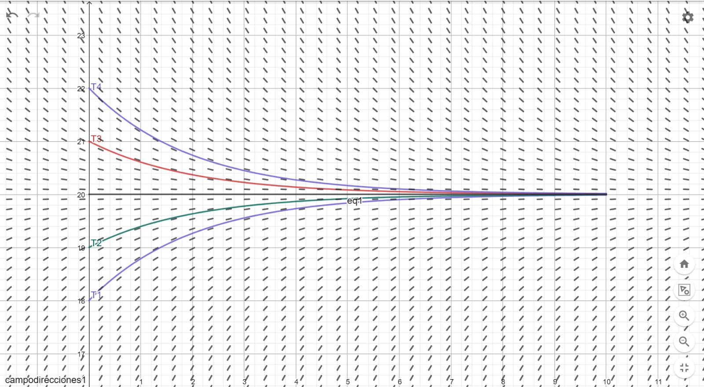
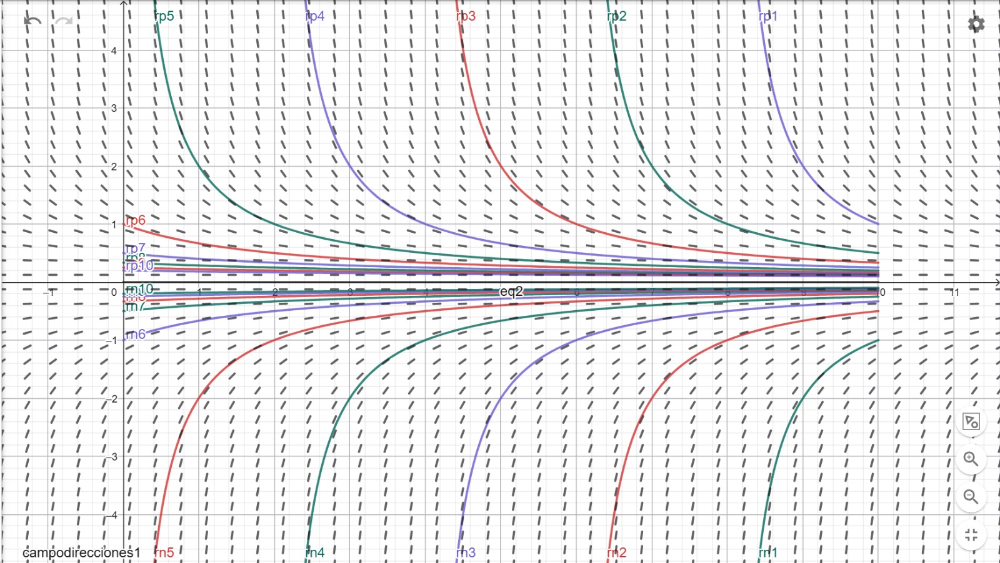
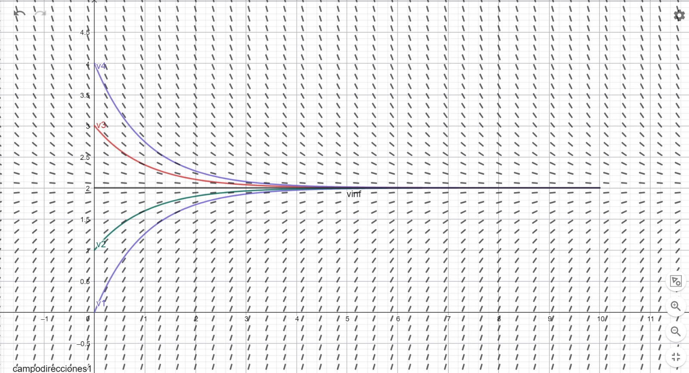
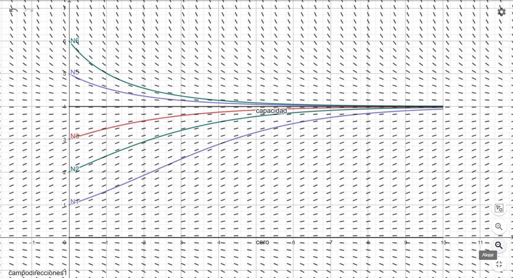

Soluciones de Ecuaciones Diferenciales con Campo de Direcciones y Curvas Solución
GeoGebra + Análisis
Ecuación: dT/dt = -k(T - Tamb)
Equilibrio: T = 20 °C

Todas las soluciones se acercan a 20. Si está más caliente, se enfría. Si está más frío, se calienta.
Ecuación: dv/dx = -(f/2D) v|v|
Equilibrio: v = 0

La velocidad se frena hasta llegar a 0. Mientras más rápido va, más rápido se frena.
Ecuación: dv/dt = -bv + F
Equilibrio: v = F/b = 2

Todas las velocidades terminan en 2, que es la velocidad terminal.
Ecuación: dN/dt = rN(1 - N/K)
Equilibrios: N = 0 y N = K = 4

La población crece hasta la capacidad de carga K = 4 y ahí se estabiliza. No la puede superar.